Chismes

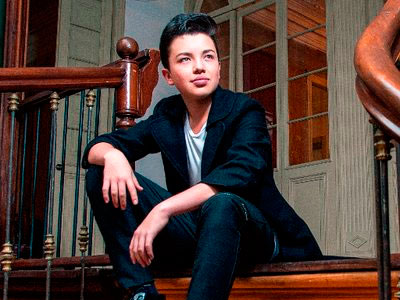
Una canción esperanzadora y aspiracional
Foto: Tomado de @alessdanello
Después del gran éxito de “Saxotón”, la revolución de los sonidos, el joven artista Alessandro D (Alessandro Danello) regresa a la escena musical con su primer sencillo -Desde que te vi-, de la mano del cartagenero Donny Caballero; una canción que fusiona los sonidos latinos sin perder la esencia del saxofón. Este tema promete ser el éxito del segundo semestre del 2018.
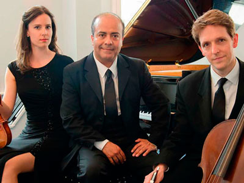
Classico Latino en concierto íntimo: “un viaje acústico por Latinoamérica”
Foto: Tomado de @classicolatino
El primer grupo Británico que interpreta música colombiana en formato clásico, vuelve al país después de un año de ausencia para rendir un sentido homenaje a la música Latinoamericana y al folclor andino colombiano. Lo mejor de su repertorio fue interpretado y presentado a todos sus seguidores el pasado 6 de septiembre en el Teatro Libre de Chapinero.
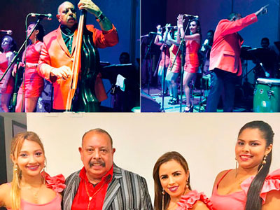
¡Regresa Juan Piña!
Foto: Tomado de @juanpinamusico
Cantante y compositor colombiano, reconocido por sus múltiples discos y ser ganador del Congo de Oro del carnaval de Barranquilla en 1980, 1981, 1983 y 1993. El 15 de noviembre de 2012 obtuvo el Grammy Latino por su trabajo Le canta a San Jacinto en la categoría Mejor Cumbia y Vallenato. En esta oportunidad llega a presentarnos, en un recorrido por los medios de comunicación en Bogotá, su nueva producción discográfica titulada La Elegancia de la música, en la que se destacan temas inéditos del folclor colombiano como: -El fuete- y -La gota fría-.
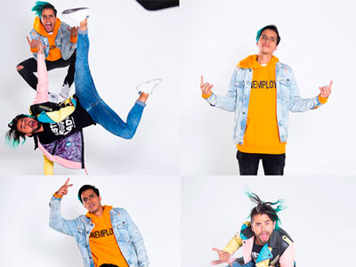
¡El parche se lanza a la música!
Alejandro Pacheco y Omar Peña presentan -No empiece hvon, no empiece mka-, tema musical que por estos días se ubica en el segundo lugar de los 50 más virales de Colombia en Spotify. El video lo realizó Beat Studios, fue grabado en Matildelina y contó con la participación de Alejandro Riaño, Martina La Peligrosa, La Mafe Méndez, Casta, Jiggy Drama, Paula Karpf, Susano José, Jonatan Clay y el Doctor Negrete. Hasta este momento han logrado más de 236 mil seguidores en Instagram; este crecimiento orgánico y basado en la calidad de sus contenidos les ha abierto la puerta para que los llamen a trabajar marcas como Netflix, Coca Cola, Red Bull, Samsung, Philips, Ubisoft entre otros.
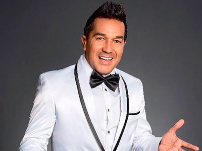
“Checo Acosta 30” ASÍ fue denominado el álbum número 27 de “el príncipe del carnaval”
Foto: Tomado de @checoacosta
El pasado 27 de enero se llevó a cabo, en la ciudad de Barranquilla, la grabación del DVD en vivo que hace alusión a los 30 años de carrera musical de este artista soledeño. Los asistentes a este evento tuvieron la oportunidad de observar un show lleno de canto y baile, con invitados especiales que interpretaron sus mejores temas junto a la gran voz del Checo.
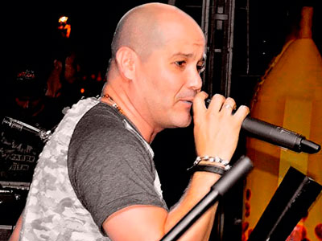
¡-Saquen Al Borracho- es lo nuevo de Karval!
Contando una historia que por lo general pasa en las fiestas, Karval presenta la canción -Saquen al borracho-, de su propia autoría y producción; una canción alegre, graciosa, y con el ritmo de la ‘Cumbia Style’ que ya caracteriza al artista colombiano.
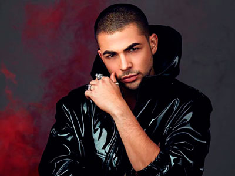
¿Juan Palau decide hacer -Otra Cosa-?
El cantante colombiano se prepara para retornar al país y recorrer Centroamérica, en lo que resta del año, para contagiar a todos sus seguidores con este nuevo sonido y su show en vivo lleno de energía y carisma. -Otra cosa- es su nuevo sencillo, realizado junto a Andrés Munera, Itzza Primera y Ryan Roy… la mezcla ideal.
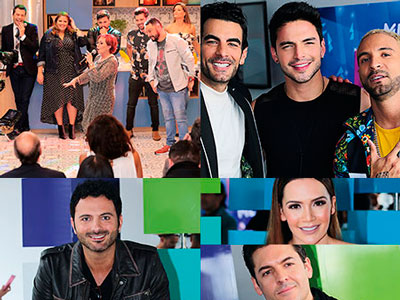
Nuevas caras, nuevas historias, nuevos escenarios.
Divertidas, intensas y emocionantes historias, aventuras de ficción y de la vida real. Nuevas producciones con #PégateALoNuevo para ver a los protagonistas que harán parte de lo que presenta la televisión colombiana.
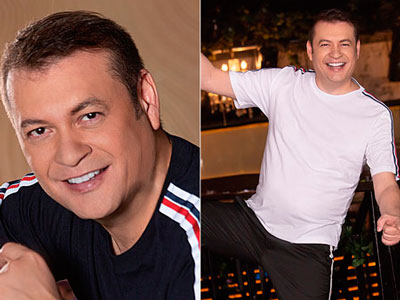
“La Presidenta”
Penchy Castro quiere llegar al corazón de muchos más colombianos y consolidarse cada día como uno de los mayores exponentes del género vallenato, conservando su estilo único. Lo nuevo del artista originario de Valledupar es una composición de Omar Geles, grabada en la ciudad de Medellín bajo la dirección y producción musical de Iván Calderón.
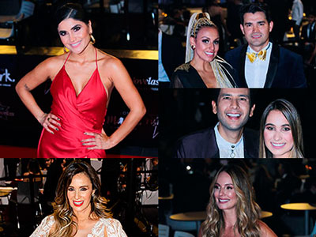
Revista Boga presente en los Premios TV y Novelas
Fueron 18 las categorías premiadas en una ceremonia que se realizó en el centro de convenciones Ágora de Bogotá, donde artistas de la televisión colombiana desfilaron por la alfombra roja y participaron de la premiación. Aquí te dejamos ver algunos de los asistentes con sus mejores galas.
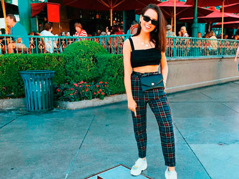
Yuya tiene su propia estrella en Las Vegas
Foto: Tomado de @yuyacst
La Youtuber mexicana Yuya recibió este honor en “El paseo de las estrellas” de Las Vegas, por sus “importantes contribuciones a lo largo de una brillante trayectoria como influencer”. Su contenido y proyección como mujer emprendedora la han hecho acreedora de uno de los mayores reconocimientos a nivel mundial. ¡Felicitaciones!
¡Una Fan enamorada!
Foto: Tomado de @camila_cabello y @lmxlm
A través de sus historias de Instagram, Camila Cabello compartió algunos videos de la presentación de Luis Miguel, en la que no ocultó su admiración y fanatismo por el intérprete. La estrella pop cantó varios de los icónicos temas del cantante nacionalizado mexicano y muy emocionada compartió el momento con sus más de 24 millones de followers.
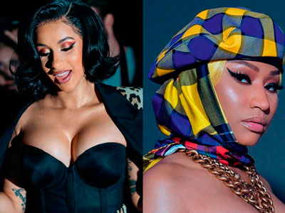
¡Juego de manos, juego de …!
Foto: Tomado de @iamcardib y @nickiminaj
Las raperas Cardi B y Nicki Minaj se “fueron a las manos” y se insultaron en la fiesta anual del New York Fashion Week. El hecho dio la vuelta al mundo puesto que Cardi B terminó con un tremendo “chichón” en la cara. ¡Todo un espectáculo!
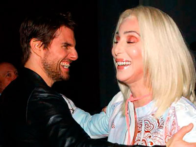
Cher devela que Tom Cruise y ella “se enamoraron” gracias a la dislexia
La chispa surgió cuando Cruise era el niño deseado de Hollywood, tras haber protagonizado ‘Risky Business’ (con tan solo 22 años), y Cher, que le sacaba 15 años, acababa de recibir su primera nominación al Oscar por ‘Silkwood’. Eso sí, el amor duró muy poco, aunque lo suficiente para que hoy Cher todavía recuerde a Tom como una de las cinco mejores parejas sexuales que ha tenido en su vida.
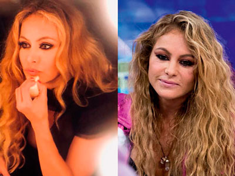
¿Abuso de botox?
Foto: Tomado de @paulinarubio
La cantante mexicana Paulina Rubio sorprendió a sus fanáticos tras aparecer en un programa de la televisión española. Los seguidores aseguran que la chica dorada tiene “otro rostro” y ha abusado del botox. ¿Ustedes que opinan?
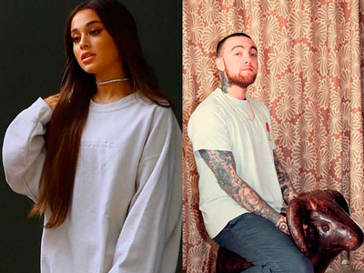
Mac Miller y Ariana Grande: una “tóxica” historia de amor
Foto: Tomado de @arianagrande y @macmiller
En un corto comunicado la familia del productor, rapero y cantante confirmó su muerte en California. Ariana y Mac Miller comenzaron su relación en agosto de 2016 y terminaron en mayo de este año. Tras dar la noticia de su ruptura, la cantante expresó que había intentado ayudarlo a superar su abuso de sustancias pero que no podía quedarse en una relación que ella misma calificó de “tóxica”.